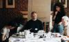
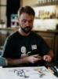
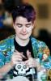

that was then:
Last year at Caption
Pictures taken from Matt Brooker's photo album. Click on the small images to see larger versions.
1998 was our last chance to kill off Caption before it dragged us into the next millennium, so we chose death as our theme: both the idea that inspiration can come from death and darkness, and the thought that comics generally and the small press in particular are a genre in danger of dying a pauper’s death as popular media like television and computer games take over. We were a cheery lot, last year.
But I thought it was brilliant — an excuse to do a really gruesome exhibition. So I set about inviting people to send in evidence bags from their own murder scene. Being a cowardly, superstitious lot, many comiceers felt uncomfortable with the idea, but I got enough to fill a corridoor with tagged bags of weird detritus — tattered toys, scraps of writing, collages and illustrations, along with the inevitable scalpels, tissue samples, unidentified pills, and blood-stained pieces of glass. Ouch! So many people failed to get their bags done I left out post-it notes for them to put their ideas on. The resulting catalogue of conceptual doom included such fates as ‘choked on a mackerel’, ‘airbrushed out’, and ‘watched all six episodes of Invasion Earth.’
Steve Whitaker’s white-on-black workshop provided a good excuse to muck around with some very unfamiliar materials: white emulsion paint on black sugar paper. The combination of crude materials and working in negative produced some strange and amazing pictures:  Lee Kennedy’s deathly vision of dark Teletubbies was unforgettable.
Lee Kennedy’s deathly vision of dark Teletubbies was unforgettable.
I hadn’t seen the paper left in the bar put to such good use for years. I’d managed to find a long roll of paper in a cheapie bookstore, and all the artists set to work turning it into the sort of frieze that would never find its way onto a toddler’s wall. Beer stains, dirty jokes, and particularly beautiful art from, among others, Sean Bieri, Nik Abadzis, D’Israeli, and Ed Hillyer made for scribble pads to be remembered.
The auction is always a bit stressful, with some of my own pieces for sale, and always one or two things I really want. Fortunately I had the distraction of meeting Steve Green, founder of the APA I’m in, to get my mind off the bidding — which, as usual, got a bit fraught around some favourite items. Still, that’s where we raise the money.
Sunday was beautifully languid, even sunnier than the Saturday had been, and I spent most of the day in the garden with cool beer, good friends and far too many brilliant new comics to look through. Almost like being a punter even. Except that they didn’t have to worry about getting six four-by-four boards home at the end of the day...
Jeremy Dennis, Art and Site Manager
Watch out for art from CAPTION98 on display at spacecaption1999.